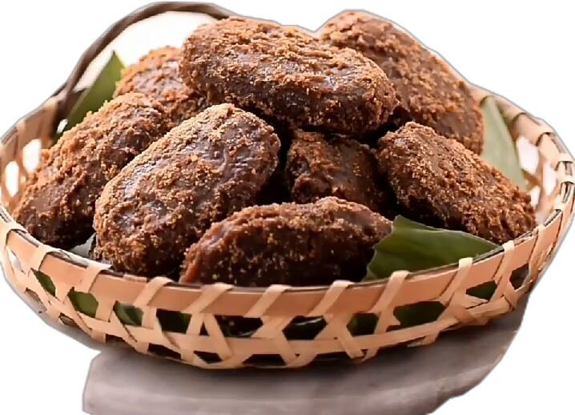

RESEP GEMBLONG KETAN HITAM
Dibuat Oleh : Ulinuha Kamilatunnisa

Gemblong ketan hitam adalah salah satu jajanan tradisional yang terbuat dari tepung ketan hitam, kelapa parut, dan dilapisi gula merah. Rasanya manis, gurih, dan teksturnya kenyal. Berikut adalah resep dan cara membuatnya.
Bahan-Bahan
- Tepung ketan hitam: 250 gram
- Tepung ketan putih: 50 gram (tambahan ini akan membuat tekstur lebih kenyal dan tidak terlalu keras)
- Kelapa parut: 150 gram, pilih kelapa setengah tua agar rasanya lebih gurih
- Air hangat: 100-150 ml (gunakan secukupnya hingga adonan bisa dibentuk)
- Garam: 1/2 sendok teh
- Minyak goreng: Secukupnya untuk menggoreng
- Gula merah: 150 gram, sisir halus
- Gula pasir: 50 gram
- Air: 75 ml
- Daun pandan: 1 lembar, simpulkan (untuk menambah aroma wangi)
Cara Membuat
- Campurkan tepung ketan hitam, tepung ketan putih, kelapa parut, dan garam dalam wadah besar. Aduk rata.
- Tuang air hangat sedikit demi sedikit sambil diuleni hingga adonan kalis dan bisa dibentuk. Adonan tidak boleh terlalu lembek atau terlalu keras.
- Bentuk adonan menjadi lonjong-lonjong atau bulat pipih sesuai selera.
- Panaskan minyak goreng dengan api sedang.
- Goreng gemblong hingga matang dan berwarna sedikit kehitaman. Balik sesekali agar tidak gosong.
- Angkat dan tiriskan.
- Dalam wajan terpisah, masukkan gula merah, gula pasir, air, dan daun pandan. Masak dengan api kecil hingga semua gula larut dan mengental.
- Masak terus hingga adonan gula berbuih dan menjadi kental seperti karamel. Tes kekentalannya dengan meneteskan sedikit adonan gula ke dalam air dingin, jika tetesan gula langsung mengeras, berarti sudah siap.
- Kecilkan api kompor. Masukkan gemblong yang sudah digoreng ke dalam wajan berisi larutan gula.
- Aduk cepat hingga seluruh permukaan gemblong terlumuri gula secara merata.
- Angkat dan dinginkan di atas piring atau loyang yang sudah diolesi sedikit minyak agar tidak lengket.
- Gemblong ketan hitam siap disajikan setelah lapisan gulanya mengeras.